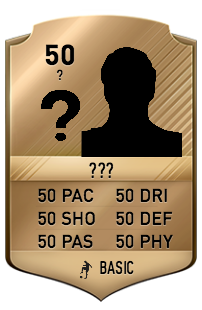
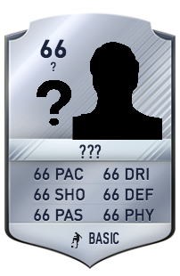
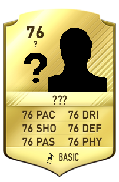

You began as a bronze player with every stat at 50. As you reach 66 you become silver until finally at 76 you become a gold rated player. Choose one stat to be boosted to level 80 which will be your Power Trait that can be used to show what stat your pride yourself in (this stat cannot be levelled till all other stats are at 80). Create your bronze card and begin the journey to becoming a gold legend.
   create your cardAt level 50 you start off at no club. At 60 a two star club will require your services and so on. Three clubs will be randomly generated chosen by star level and of those three you can choose the club that will suit you. Finally at level 90 you choose the club you want to be part of. The greater star the club you are currently at the more choices you have to choose of games and who starts over your friend. Level 60 awaits. Become part of your first club.
find your clubEvery point won over your opponent counts as a +2 to any stat excluding your level 80 stat. If you won 7-2 this would mean you would have 5 +2 upgrades. There are rules though each stat must be levelled all to an equal level excluding the level 80 stat till all are at 80, once all stats have been raised to an equal level e.g. all stats become 62 the overall rating of the card becomes 62. So now begin playing games and prove that you deserve that gold card.
play games. level up.